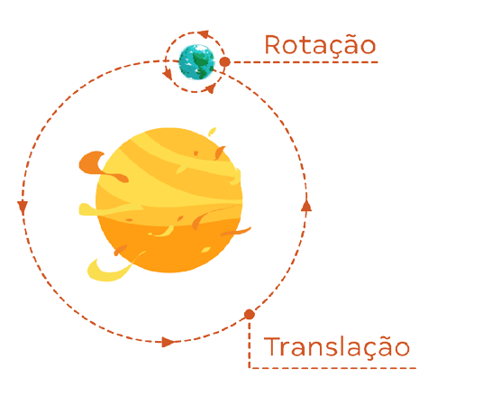

⊙ Planetas:
Os nomes dos planetas do sistema solar em sua respectiva ordem são
Mercúrio, Vênus, Terra, Marte, Júpiter, Saturno, Urano e Netuno.
⊙Movimentos dos Planetas:

Os Planetas estão em constante movimento de forma que giram em torno de sua própria órbita ou em torno do Sol.
O movimento de rotação designa o movimento que os planetas realizam em torno do seu próprio eixo (equivale ao tempo de 1 dia).
Já o movimento de translação define o movimento que os planetas realizam em torno do sol (equivale ao tempo de 1 ano).
⊙ Características dos Planetas do Sistema Solar:
Cada planeta do sistema solar possui peculiaridades de forma que são classificados de acordo com sua constituição.
Nesse aspecto podemos destacar dois tipos de planetas. Planetas terrestres ou telúricos (formado sobretudo por rochas),
localizados mais próximos do sol como Mercúrio, Vênus, Terra e Marte; Planetas gasosos ou jovianos (constituídos majoritariamente de gases)
, que possuem maior tamanho e menor densidade em relação aos terrestres: Júpiter, Saturno, Urano e Netuno.
⊙ Mercúrio
Mercúrio é o planeta mais próximo do Sol. É um planeta rochoso, destituído de satélites e atmosfera rarefeita,
sendo também o menor planeta do sistema solar. Por esse motivo apresenta temperaturas bastante elevadas de
aproximadamente 400°C. Por outro lado, a face do planeta não iluminada pelo sol pode atingir temperaturas de
aproximadamente -170 °C. O movimento de rotação do planeta é de 59 dias, enquanto o de translação é de 87 dias.
⊙ Vênus
Conhecido como “Estrela d’alva”, por causa de seu forte brilho, Vênus tal qual Mercúrio é um planeta que não possui
satélite. Visível do nosso planeta, Vênus é o segundo planeta a partir do Sol e o mais perto do planeta Terra.
Seu movimento de rotação é um dos mais lentos, com 243 dias para completar a volta em torno de si mesmo; e,
o movimento de translação de 225 dias aproximadamente, Vênus é o planeta mais quente do sistema solar, com
temperaturas que podem atingir 480°C. Assemelha-se com o planeta Terra no tocante ao tamanho, composição, estrutura,
massa, densidade e força gravitacional.
⊙ Terra
Terceiro planeta do sistema solar a partir do Sol, o planeta Terra é rochoso, com atmosfera gasosa e
temperatura média de 15°C. Possui um satélite natural, a Lua, e a quantidade de água existente no planeta,
também chamado de “planeta azul”, aliada à quantidade de oxigênio, permitem o desenvolvimento da vida no planeta,
sendo o único conhecido do sistema solar com vida humana. O movimento de rotação terrestre dura aproximadamente
24 horas (tempo de 1 dia); enquanto o movimento de translação do planeta dura 365 dias (tempo de 1 ano), exceto
nos anos bissextos, os quais apresentam 366 dias.
⊙ Marte
Quarto planeta a partir do Sol e o mais visível do planeta Terra, Marte possui dois satélites naturais “Fobos
e Deimos”, sendo o segundo menor planeta do sistema solar, atrás de Mercúrio. Também chamado de “planeta
vermelho”, devido às partículas de óxido de ferro presentes em sua atmosfera, o planeta Marte é um planeta
rochoso, frio e seco. O movimento de rotação de Marte assemelha-se ao da Terra, com duração de 24 horas e 37
minutos, enquanto que o movimento de translação do planeta é de 687 dias.
⊙ jupiter
Júpiter é o maior planeta do sistema solar. É um planeta gasoso (composto sobretudo por hidrogênio), 1.300
vezes maior do que o planeta Terra. Quinto planeta a partir do Sol, Júpiter possui o maior número de satélites,
79 satélites, e apresenta temperaturas de até -150°C. Seu movimento de rotação dura 9 horas e 55 minutos,
considerado o movimento de rotação mais rápido de todos os planetas do sistema solar; enquanto o movimento
de translação do planeta corresponde a cerca de 12 anos terrestres.
⊙ Saturno
Segundo maior planeta do sistema solar, depois de Júpiter, Saturno é conhecido pelos seus anéis,
formados por rocha, gelo e poeira. Sexto planeta a partir do sol, depois de Júpiter, Saturno é o planeta do
sistema solar que possui muitos satélites: 82 luas. Composto basicamente de hidrogênio, ele possui temperatura
média de -140°C, sendo que seu movimento de rotação dura 10 horas e 14 minutos e o de translação cerca de 30 anos terrestres.
⊙ Urano
Terceiro maior planeta do sistema solar e sétimo planeta a partir do Sol, Urano é um planeta gasoso que
apresenta médias de temperatura de -185°C e possui 27 satélites. Possui uma característica interessante tocante
ao seu eixo de rotação com quase noventa graus em relação com o plano de sua órbita, que por sua vez é muito
extensa. Dessa forma, o movimento de rotação do planeta dura 17 horas aproximadamente, enquanto o movimento de
translação dura cerca de 84 anos terrestres.
⊙ Netuno
Planeta do sistema solar mais distante do Sol e o quarto maior em tamanho, Netuno possui 14 satélites naturais e
apresenta temperaturas médias de aproximadamente -200°C. Trata-se de um planeta gasoso, formado principalmente por
hidrogênio, hélio, amônia, metano e água. O movimento de rotação do planeta dura cerca de 16 horas, enquanto sua
translação equivale a 164 anos terrestres.